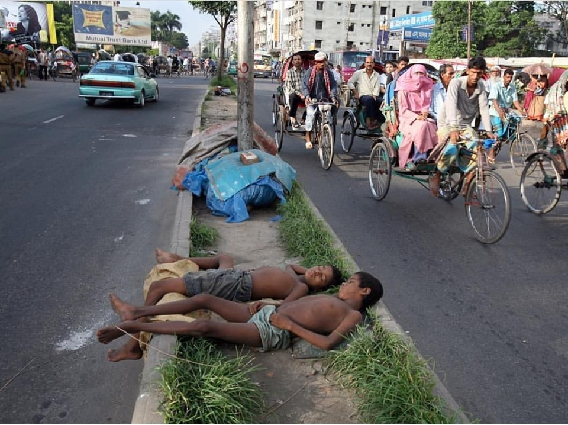

মধ্যবিত্ত পরিবারে জন্মগ্রহণ করেও জীবনটাকে কত কঠিন আর জটিল মনে হয়। এত ভাবনা চিন্তা এত পরিকল্পনার পরও কেন জানি
সবকিছু এলোমেলো লাগে, যেন গুছিয়ে ওঠা হয় না কখন। চাহিদা, চাওয়া-পাওয়ার শেষ আর হয় না। বড় ছেলে নাটক দেখে নিজেদের তার
সাথে তুলনা করে কষ্ট অনুভব করি। তাহলে তাদের কথা কি বলবো যাদের মাথার ওপর ছাদ নেই, দিন আর রাত যাদের জন্য সমান। তিন
বেলা খেতে পাওয়াও যাদের জন্য দুস্কর। কখন এরা ভিখারি কখন পকেট মার কখনও আবার আমাদের সুন্দর শহরকে নংরা করার কারন।
হ্যাঁ আপনারা ঠিক ভানছেন, আমি
পথ শিশুদের কথাই বলছি। এদের কাছে আনন্দ খুশি বলতে তিন বেলা ভাত আর
থাকার জন্য ছাদ।
ঈদ মানে খুসি, ঈদ মানে আনন্দ। কিন্তু এই পথ শিশুদের ঈদ আনন্দ কি সবারমত?
না, ঈদ আসে, ঈদ যায়,কিন্তু সেই ঈদ কখনই তাদের জন্য উৎসব হয়ে ওঠেনা।
এরা বঞ্চিত থেকে যায় সব কিছু থেকে। আমরা কখনও জানতে চাইনা এরা কি বলতে চায়,
কি এদের মনের কথা।
আরিয়ান রাহমান সানি এর ফেসবুক স্ট্যাটাস।
কেউ বলে পথশিশু, কেউ বলে টোকাই,
আবার কেউ বলে সুবিধা বঞ্চিত শিশু আমরা,
আমাদের ও তো নাম আছে,
কিন্তু সে নাম ধরে ডাকার
মতো মানুষ তো আর সমাজে নাই।
আমাদের চাওয়া নয়তো অনেক বেশি
একটু হাঁসি একটু খুশি আর
একটু সহানুভুতি পেলেই আমরা সুখি।
অনাদর আর অবহেলায় বেড়ে ওঠা আমাদের
দু বেলা দু মুঠো ভাত খাওয়ার জন্য
একটু সহানুভুতির অপেক্ষায় থাকি আমরা।
ঈদ এর আনন্দ আর খুশি সব চাইতে বেশি লক্ষ করা যায় শিশুদের মাঝে।
নতুন জামা, সালামি, উপহার এইসব নিয়েই ব্যস্ত শিশুরা। রাস্তার পাসে পড়েথাকা
ওরাও শিশু, ওদের মধ্যেও ঠিক একই অনুভূতি কাজ করে।
তারা চেয়ে থাকে নতুন জামার দিকে, দেওয়ার তো কউ নেই।
